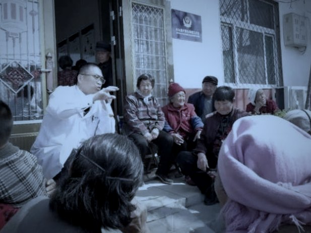
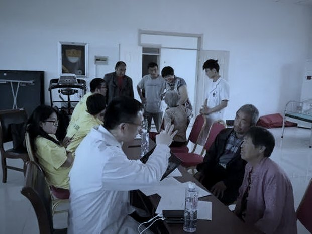
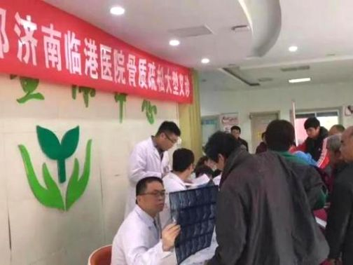
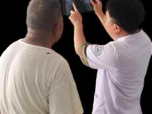

这四个说法，正在耽误你爸妈
“不疼了就好了”
疼痛缓解≠骨折愈合≠骨质疏松被治疗。停药、停随访，风险就回来了。
“补钙就够了”
钙与维 D 是原料，不是治疗。确诊骨质疏松需要规范抗骨松药物。
“手术做完就没事了”
手术处理的是这一节椎体，其余椎体仍在疏松。术后抗骨松治疗是必须项。
“年纪大了不敢动”
长期卧床会加速骨量流失与肌力下降，反而更容易再骨折——要动，但要有方法。
骨质疏松的药，为什么不能“不疼了就停”
抗骨质疏松药能在用药期间把骨折风险压下来，但停药后骨量会回落。它像高血压、糖尿病一样，是长期管理，而不是“疗程结束”。
“躺着养”，可能是最伤骨的养法
这里说的是没有期限的长期卧床。急性期必要的短期休息与支具保护仍然成立。
骨量掉得更快
不承重，骨量流失加速；本来就在疏松的骨头变得更脆。
肌肉跟着萎缩
卧床一两周，下肢肌力就明显下降；肌力越差，越容易跌倒。
心肺和情绪一起垮
长期卧床易并发肺部感染、血栓、便秘，情绪也明显低落。
踝泵是保底的安全动作——防卧床并发症，不直接作用于骨折椎体；五点支撑、臀桥、小燕飞是分阶段的训练动作——练腰背伸肌，必须按时间窗进来。所以下面把它们放回各自该出现的阶段里。
同一个动作，放在不同时间窗，性质可能完全相反。按时间排，并区分微创术后（PVP/PKP）与保守治疗两条路径。
① 早期 0–2 周保安全，不练腰
可以做：踝泵、股四头肌等长收缩（绷紧 5–10 秒）、腹式呼吸；微创术后可早期做直腿抬高。
明确禁忌：任何腰背肌训练——五点支撑、臀桥、小燕飞，以及弯腰和扭转。椎体还没获得足够力学稳定，把臀部抬离床面会在骨折椎体上产生剪切与压缩应力，风险大于收益。
下地：PVP/PKP 术后 1–2 天可在支具保护下下床，以不引起腰部酸胀为度；保守治疗通常需绝对卧床 2 周，之后支具保护下逐步下床。
脚尖勾到最大停 3–5 秒，再绷到最大停 3–5 秒。小腿肌肉一收一放像泵一样，把下肢的血往上推。
它的任务是预防下肢深静脉血栓，不直接作用于骨折椎体——让你安全度过“不能练腰”的这段窗口。早期就能做，也最不容易出错。
已有下肢血栓、腿肿疼痛，或医生要求制动时，先问医生再练。
② 中期 2–6 周叫醒腰背肌，负荷要低
可以引入：五点支撑的低强度预备版（头、双肘、双足支撑，抬离高度低，重点是把动作做出来）；臀桥以低强度、小幅度引入，从改良短弧开始。
仍要避免：提重物（>5 kg）、弯腰拾物（改成下蹲）、久坐超过 1 小时；支具继续佩戴。
保守治疗：部分方案建议伤后 4 周再逐步增加，每组 10–15 次、每日 2–3 组，以不引发剧烈疼痛为度；骨折稳定性存疑时起步更保守。
两者练的是同一件事——腰背伸肌。区别在支点：五点支撑用头、双肘、双脚五个支点把负荷分担掉，产生“肌肉夹板效应”，是入门；臀桥把肘部支点收回来，只靠双足和肩背，对腰椎主动稳定控制要求更高，所以是进阶，不是平行选项。
这一阶段引入时，都不追求抬高：五点支撑重点是把动作做出来，臀桥从“改良短弧”开始——只轻轻抬臀、不拱腰。
需复查确认有初步骨痂、无明显静息痛、医生评估同意后再做；术后 2 周内不做。
③ 中后期 6–12 周强化，但小燕飞仍是门槛
可以强化：五点支撑、臀桥逐渐增加抬起高度与保持时间。
支具：医生确认骨折稳定、疼痛可控后，再按情况去除。
小燕飞放在这一阶段的末尾：8–12 周后、骨痂形成、影像稳定、经医生同意，才以低强度尝试。
俯卧，双臂后伸贴体侧、额头轻贴床面；同时抬起上身与双腿，停 1–2 秒再落下。练竖脊肌和多裂肌，但它是俯卧位脊柱后伸抗阻，对椎体后方负荷远大于前两个。
多个来源提示：未经系统治疗的骨质疏松骨折不宜做；通常 8–12 周后、骨痂形成、影像评估稳定、医生同意才以低强度尝试。稳定性存疑就继续推迟。
④ 远期 3 个月以后从“练腰”转向“防跌倒、防再骨折”
有氧：快走、游泳、固定自行车等低冲击方式，每周 5 天、每天至少 30 分钟，以“无疼痛、不疲劳”为前提。
抗阻：渐进式阻力训练，每周 2–3 次，针对下肢与核心。
平衡与柔韧：太极拳、八段锦、串联站立。跌倒是再骨折最重要的触发因素之一，平衡训练有独立价值。
继续避免：跳跃、剧烈扭转等冲击性动作，直到医生明确 clearance。
依据：德国骨科与创伤学会（DGOU）关于骨质疏松运动治疗的建议——以强化背伸肌改善轴向稳定；以及国内 OVCF 分阶段康复与术后康复方案的常见安排。以上为一般规律，具体节奏以主刀医生和康复科评估为准。
怎么查、谁来管到底
双能 X 线骨密度（DXA）是判断骨质疏松的标准方法。但查出来只是起点——真正重要的是把“筛查—诊断—治疗—随访”串成闭环。








